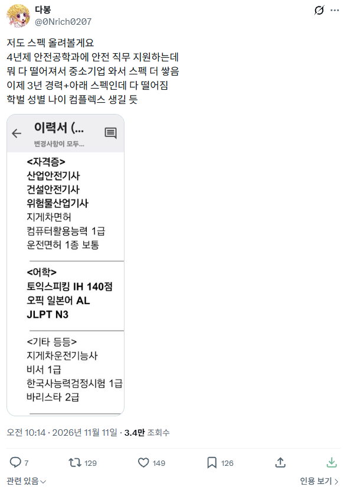
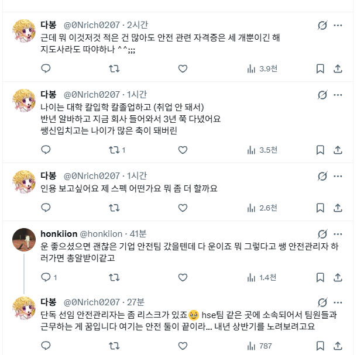

어짜피 현장직 생각하고 있고...산업기사도 떨어지는데 기사는 꿈도 못꿀 머리라...
산업기사 없이 폴리텍을 졸업할거처럼 보임...
진짜 머리좋은애들은 올림피아드 나간다.
기사자격증은 개빡대갈새끼들 먹고 살라고 나라에서 최소한의 노력이라도 한 새끼라고 인증마크 찍어서 사회내보내는제도임.
개빡대갈새끼 따라고 만든 제도에 대가리가 나빠서 못딴다고하면 그건 그냥 핑계임.
나이 60먹어서도 전기기사 따고 취업자리 알아보는 할배들도 많다.
난 기사 자격증 없는 직종이라 몰라서 그런데 기사는 따기 어려운거 아녀? 산업기사는 그래도 쉬운편이고?
고등학교부터 공부는 해본적이 없는놈이라 산업기사라도 따라 하고 폴리텍 보낸거긴한데
이놈말로는 이번에 산업기사 필기된게 과에 2명뿐이라던데 골치 아프다 진짜...늦둥이 새끼라
지금 집안 어른들은 국민연금 받는 나이신데 아직 취직도 못하고 자격증도 없고
어디 취직이라도 하게 자소서 써온거 보자니까 중3이 쓴 자기소개 수준이고...
산업기사 땄으면 학점은행 안했어도 기사 따는데 산기가 하나도 없어서 학점은행 듣는게 낫긴 하겠다
폴리텍에서 자기 전공 산업기사 하나 못따는거면 씹폐급이거나 도저히 그 길이 안맞는거임
그런사람한테 학점은행제로 학위따고 기사따라는건 추천 못하겠음
그럼 진짜 뭐해먹고 살아야 하나 이새키...하...
폴리텍에서 산업기사 못따면 씹폐급 소리 들을정도구나...
공부를 전혀 안하고 먹고 살려면 뭐해야 하냐...쿠팡뛰고 배달 뛰어야 하나...
이미 저번 공무원 못하는거에서 이새끼 급 낮춰야 한다 지금 기대하신다고 밀어줘도 가망없다고하고 폴리텍 보냈을 때도 친척 어른들 엄청 속상해하셨는데...아예 폴리텍에서도 씹폐급 수준이다 아무런 학력이나 자격증도 필요없는 배달이나 택배 해야한다고 하면 친척 어른들 뒤집어 지실거 같은데...
정확히 무슨과이고 무슨 자격증을 응시했는지 모르겠는데 과에서 2명밖에 못 붙은게 이해가 안되네
전기전자과임 올해 입학했고 올해 9월인가 8월인가 필기 있었는데 전기 산업기사 필기 2명 붙었다고 하더라
폴리텍가면 학점 채우고 자격증 따서 취업도전하는쪽 아닌가?
ㅇㅇ맞지 근데 제일 기본이 되는게 산업기사인데 산업기사를 하나도 못따면...?
난 기능사따고 취업해서 회사다니면서 쌍기사따서.. 어떻게든 노력하면 되겠지 하는 생각...
얘도 고딩때 딴 전기인지 전가인지 기능사는 하나 있는데
취업에 별 도움이 안된다고 하더라고...어떻게든 노력하면 되겠지 생각을 한게
20살 대학보내면서부터 인데 5년째...군대도 다녀오고 했는데 아무런 변화가 없으니...
정처기 전기기사 위산기 산안기 지게차 한국사1급 있는데 난 어학이 없어서 ㅠㅠ
와.. 내가 일하는쪽은 문돌이도 없어서 곡소리 나는데... 온도차가 심하네..
저 기사들 다 한달컷 기사들이고
토스가 140이면 병신점순데?ㅋㅋㅋㅋㅋㅋㅋ
걍병신스펙이라 안붙는걸 뭐라고 저러고 있는거냐
저 기사들 잘모르는데
지금적은걸로는 난이도 전기기사처럼
높은건아닌가보네?
암기위주과목일걸
글쿠먼ㅋ
기사는 딸려면 뭐 제한있지 않음? 기능사가 있다거나 전공을했다거나. 안전기사는 다른건가?
평범하네. 저거 다 합쳐도 인서울 졸업에 못 비빔.
특출난게 하나도 없는데
저런사람들은 공무원이나 공기업같이 필기로 죠패는곳에서 승부봐야댐 애초에 기사는 사기업스펙이아님 사기업에선 어디인턴이나 대외활동에 더 중요시보지
뭐 그렇게 특출나게 어렵다고 악명이 자자한 기사들이 아니긴 해...
전기쌍기사 용접기능사 산안기 소방전기 + plc경력으로 먹고사는중...
산안기가 다른 기사 시험에 비해 그렇게 어렵지 않음
암기 잘하는 형들은 필기 실기 원트에 다 땀
건안기는 산안기랑 겹치는게 많음
안전관리자 수요가 있을텐데 의외네
공사가 다 망해서
산업기사 이딴 병신같은거 따지말고 1년짜리 학점은행제 더 들어서 4년제 학점채우고 무조건 기사봐라.
기사도 씨발 썩어넘치는데 기능사 산업기사 이딴새끼들을 써주겠냐. 회사 영업용 명판채우기로도 기사로 줄세우는게 멋있지 중간에 산업기사 하나씩 있으면 쪽팔려